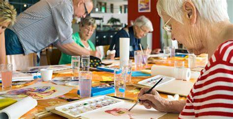
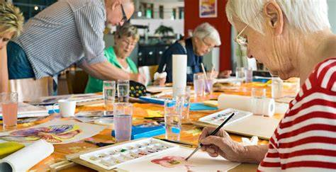
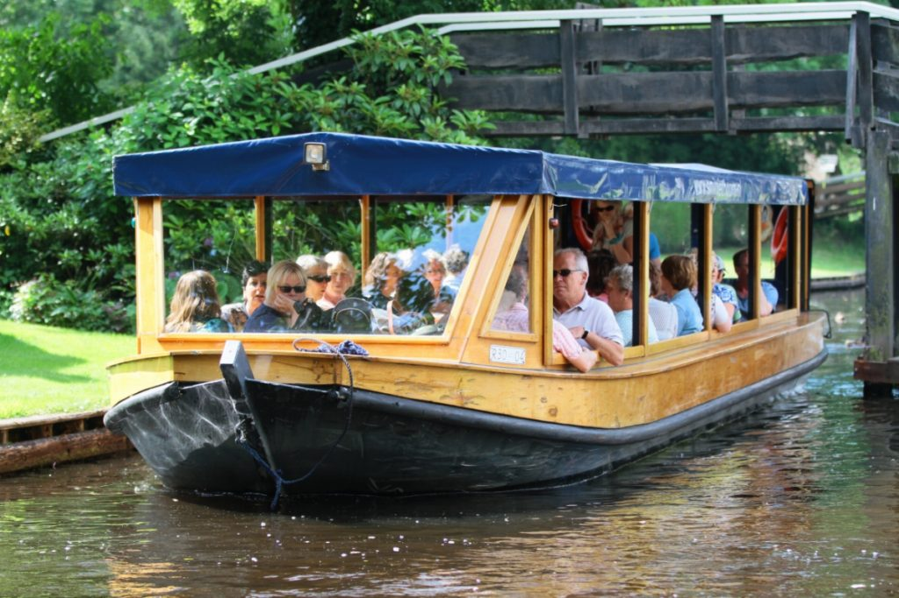
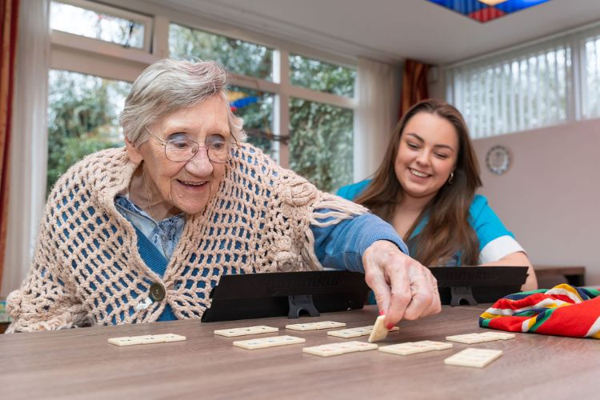

Workshops & educatie
Educatieve momenten stimuleren de geestelijke gezondheid en geven ouderen de kans om nieuwe kennis en vaardigheden op te doen.

Bij Dagbesteding Menz bieden we een dagprogramma dat structuur, plezier en sociale verbinding combineert. Onze activiteiten zijn afgestemd op de behoeften en mogelijkheden van ouderen en dragen bij aan welzijn, eigenwaarde en vitaliteit.
Iedere dag stimuleren we beweging, van lichte gymnastiek en wandelen tot eenvoudige sport- en spelactiviteiten. Dit draagt bij aan de fysieke gezondheid en helpt ouderen fit en actief te blijven, ongeacht hun niveau.
Spelactiviteiten zoals gezelschapsspellen en kaartspellen zorgen voor ontspanning en onderlinge verbondenheid. Onze begeleiders moedigen samenwerking aan en zorgen dat iedereen zich betrokken voelt.
Af en toe organiseren we extra sportmomenten of groepsspellen. Dit geeft deelnemers een gevoel van prestatie en versterkt de positieve sfeer binnen de groep.
Muziek, verhalen en taal spelen een belangrijke rol binnen ons programma. Ze stimuleren het geheugen en zorgen voor een gevoel van herkenning en verbondenheid.
Tijdens culturele sessies delen deelnemers hun tradities, zingen of vertellen verhalen. Dit vergroot het zelfvertrouwen en versterkt de band tussen de deelnemers.
Ook organiseren we uitstapjes naar culturele of historische plekken. Zo verbreden ouderen hun horizon en beleven ze samen waardevolle momenten.
Creatieve activiteiten zoals schilderen, handwerken en koken zorgen voor ontspanning en bieden ruimte voor zelfexpressie en ontwikkeling.
Samen koken en tafelen is een belangrijk onderdeel van onze dag. De maaltijden zijn momenten van ontmoeting en verbondenheid, waarbij we aandacht besteden aan gezonde en seizoensgebonden voeding.
Regelmatig organiseren we speciale thema-maaltijden of kookworkshops. Zo leren ouderen nieuwe gerechten kennen en delen ze hun eigen culinaire tradities.
Educatieve momenten stimuleren de geestelijke gezondheid en geven ouderen de kans om nieuwe kennis en vaardigheden op te doen.
Gezamenlijke uitstapjes naar parken, musea en andere plekken bevorderen sociale contacten en geven plezier en afwisseling in het dagelijks leven.
Vieringen rond feestdagen en seizoenen brengen gezelligheid en versterken de verbondenheid binnen de groep.
